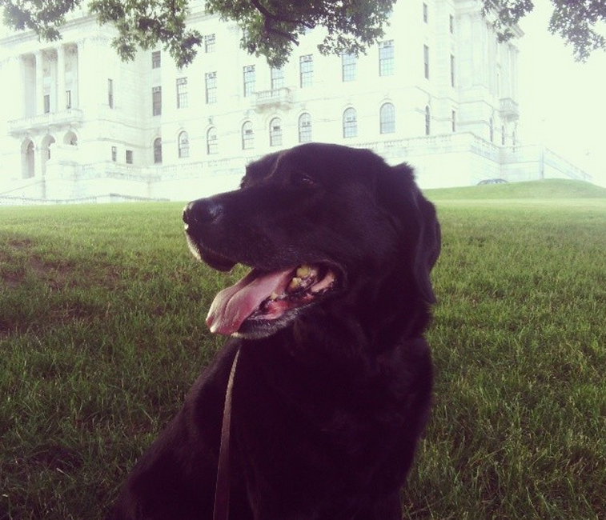

It's about a me!
I've been writing code since I was 14. It started with an RPG on my TI-83 calculator called "Xarkaban". I was a nerd.
I still am a nerd.
I did my undergrad in genetics at Providence College, and my masters in logic at Tufts. Afterwards I studied web development at Startup Institute Boston.
In my free time I enjoy playing the saxophone, cooking, running, and spending time with my wife and faithful beast (seen below). I have a quasi-obsessive love of games like RISK, Age of Empires, and Magic. And I just got into correspondence chess. Ain't no stopping me.
